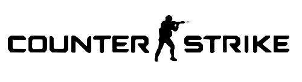

카운터 스트라이크
카운터 스트라이크 시리즈의 첫 번째 작품. FPS의 소장르라고 할 수 있는 택티컬 슈터(Tactical shooter)를 정립한 게임이며, 비교적 사실적인 총기 묘사가 특징이다. 플레이어가 테러리스트, 대테러리스트 두 팀으로 나누어져 한 팀은 사이트에 폭탄을 설치하고 반대 팀에서는 해체하는 폭파 시나리오 방식의 원조격이라고 할 수 있는 게임이다.
MORE카운터 스트라이크 시리즈의 첫 번째 작품. FPS의 소장르라고 할 수 있는 택티컬 슈터(Tactical shooter)를 정립한 게임이며, 비교적 사실적인 총기 묘사가 특징이다. 플레이어가 테러리스트, 대테러리스트 두 팀으로 나누어져 한 팀은 사이트에 폭탄을 설치하고 반대 팀에서는 해체하는 폭파 시나리오 방식의 원조격이라고 할 수 있는 게임이다.
MORE
넥슨GT에서 제작하고 넥슨에서 배급하는 온라인 FPS 게임. 게임 제목 자체는 '기습공격'이라는 뜻이며 이 게임 때문에 국내에서는 '서든'이라는 단어 자체가 이 게임을 명칭하는 용어나 다름없게 되었다.
MORE오버워치는 블리자드 엔터테인먼트의 팀 기반 멀티플레이 하이퍼 FPS 게임이다. 개발자들은 성별, 인종, 능력이 다양한 영웅을 제작하는 것을 목표로 하였다. 캐릭터 간 성능 균형을 조정하는 것에 노력을 기울여, 새로운 플레이어가 계속해서 재미를 느낄 수 있도록 하는 한편, 숙련된 플레이어는 비슷한 실력을 가진 플레이어에게 힘겨운 도전을 할 수 있도록 하였다. 오버워치는 기존의 FPS게임에 비해 미래를 배경으로 하였고 그래픽과 게임방식이 기존 FPS와는 다르기에 많은 사람들에게 신선함을 주었다.
MORE톰 클랜시 원작의 동명 소설을 원작으로 한 FPS 게임. 다국적 대테러부대 레인보우의 활약을 그리고 있다. 단순히 격렬하게 적을 쏘고 달리는 타 FPS 게임과 다르게 전술적인 작전 수립과 행동이 게임의 큰 부분을 차지하는 '전술 슈터 게임(Tactical shooter)'을 대표하는 시리즈 중 하나이다.
MORE
1998년 11월 19일 발매된 밸브 코퍼레이션의 골드 소스 엔진 기반의 FPS 게임이다. 혁신적인 게임 디자인으로 발매 당시 극찬을 받았다. 레벨 디자인, 인공지능, 사용자 인터페이스 등 여러 혁신점을 선보였으며 특히 1인칭 시점으로 사건을 몰입감 있게 체험하는 하프라이프의 스토리텔링 방식은 FPS 장르를 넘어 수많은 게임에 영향을 주었다.
MORE